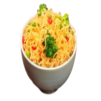

Lamem Vegetariano

R$ 90,00
Ingredientes
1,2L de água
Gengibre ralado
óleo de Gergelim
2 dentes de alho picados
Pasta de misso
Molho de soja
Açucar mascavo
Vinagre de arroz
pimenta-do-reino
Alga Kombu
Macarrão sem tempero
Champignon refogados